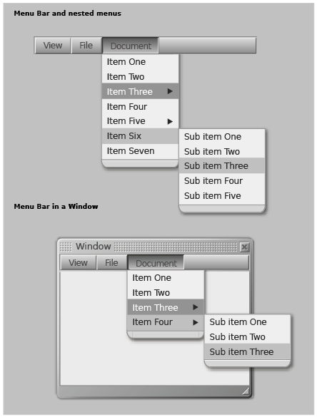

example
LZX Reference
filename: menu.lzx
Both menu and menubar combine the components "Button" and "Floating List" to form a menuing system. The menu buttons and menu bar use the "button" component. The menu list itself is a "floating list", which is itself an extension of "list". Modifying these components will cause the same changes to be inherited by the menu. These components have been integrated and coded to have the behavior of a menubar or menu.
Menu is an constructed of four components :
1. Menu button - an extension of button
2. Menu bar - an inactive bar utilizing the resources for button
3. Menu list - an extension of floating list
4. Text - contained in an input text field
